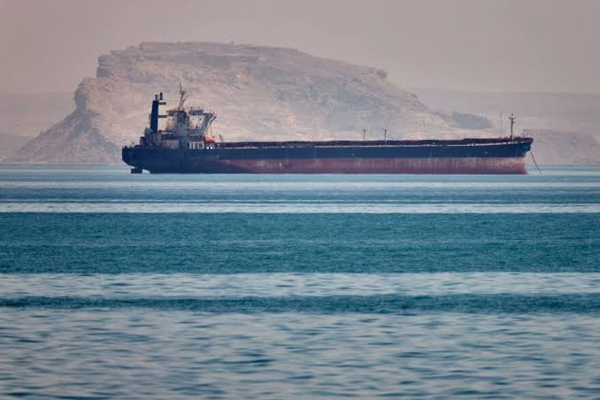

02 / MID · یادداشت Energy Notes
وقتی خط لوله فقط خط لوله نیست
روایتی از نگاه Fred B. Olayele به پیوند قیمت انرژی، مسیرهای انتقال و تصمیمهای سیاسی؛ جایی که نفت و گاز روی نقشهٔ قدرت کشورها هم اثر میگذارند.

از قیمت نفت تا نقشهٔ قدرت
فرد بی. اولایله بحث را از خودِ چاه نفت شروع نمیکند. او از جایی شروع میکند که انرژی وارد زندگی اقتصادی میشود: کارخانهای که باید کار کند، خانوادهای که هزینهٔ رفتوآمد میپردازد و دولتی که باید میان رشد، امنیت و بودجه تعادل برقرار کند. در این نگاه، قیمت و دسترسی به نفت و گاز فقط یک عدد در بازار نیست. تغییر آن میتواند چشمانداز رشد، امنیت بینالمللی و ثبات سیاسی کشورهای مصرفکننده را جابهجا کند.
مقاله در زمانی نوشته شده که بسیاری از کشورهای صنعتی در حال توسعهٔ منابع غیرنفتی بودند، اما اقتصادهای نوظهور هنوز برای گسترش تولید خود به سوختهای هیدروکربنی ارزانتر تکیه داشتند. بنابراین جهان همزمان دو حرکت داشت: تلاش برای فاصلهگرفتن از نفت و ادامهٔ وابستگی به آن. همین همزمانی، انرژی را به موضوعی اقتصادی و سیاسی تبدیل میکند.
یک تغییر قیمت، دو اثر متفاوت
اولایله افت شدید قیمت نفت در سال ۲۰۱۴، برابر با ۱۳۹۳، را نمونهای برای توضیح این پیوند میگیرد. افزایش تولید آمریکا و کانادا، رشد بهرهوری انرژی، رکود اقتصادی اروپا، کندشدن رشد چین و تصمیم عربستان سعودی برای حفظ سطح تولید، در روایت او به یک نتیجهٔ مشترک رسیدند: قیمت نفت از اوج خود در اواسط ژوئن حدود ۴۰ درصد پایین آمد.
برای مصرفکننده، چنین افتی شبیه خبر خوب است. هزینهٔ انرژی پایین میآید و بخشی از پولی که پیشتر برای سوخت پرداخت میشد، میتواند صرف کالاها و خدمات دیگر شود. مقاله میگوید این انتقال ثروت از تولیدکنندگان به مصرفکنندگان برای اقتصادهایی مانند آمریکا، ژاپن و بسیاری از کشورهای اروپایی جذاب بود. تورم پایینتر میرفت و بانکهای مرکزی برای بالا بردن نرخ بهره فشار کمتری احساس میکردند.
همین اتفاق از طرف دیگر برای تولیدکنندگان و شرکتهای نفتی فشار ایجاد میکرد. وقتی درآمد پروژهها کم میشود، سرمایهگذاری هم به تعویق میافتد. اولایله به برآورد آژانس بینالمللی انرژی اشاره میکند که برای پاسخ به تقاضای آینده، بخش بالادستی باید تا سال ۲۰۳۰، برابر با ۱۴۰۹، سالانه حدود ۹۰۰ میلیارد دلار سرمایه جذب کند. قیمت پایین میتواند این سرمایه را از صنعت دور کند و بعد، زمانی که عرضهٔ تازه کافی نباشد، زمینهٔ جهش دوبارهٔ قیمت را بسازد.
این چرخه، نکتهٔ اصلی بخش اقتصادی مقاله است. قیمت پایین میتواند در کوتاهمدت به خانوارها و اقتصادهای مصرفکننده کمک کند، اما اگر به افت سرمایهگذاری در تولید و زیرساخت برسد، در سالهای بعد اثر متفاوتی خواهد داشت. نویسنده این مسیر را پیشبینی قطعی نمیداند؛ او از ریسکی حرف میزند که در تصمیمهای امروز پنهان میماند.
آسیا چگونه مرکز ثقل بازار انرژی را جابهجا میکند؟
مقاله برای توضیح آیندهٔ بازار به جمعیت و شهرنشینی نگاه میکند. بر اساس برآوردی که اولایله از آژانس بینالمللی انرژی نقل میکند، تقاضای جهانی انرژی تا سال ۲۰۳۵، برابر با ۱۴۱۴، ممکن است یکسوم بیشتر شود. رشد اقتصادی و بهترشدن سطح زندگی در کشورهای توسعهیافته و درحالتوسعه، دو نیروی محرک این افزایشاند.
در همان افق، آسیا قرار است نزدیک به نیمی از جمعیت شهری جهان را در خود جای دهد. اگر مصرف نفت در این منطقه بالا برود، مسیر تجارت انرژی هم بهتدریج تغییر میکند. نویسنده از معماری امنیت انرژیای صحبت میکند که در گذشته بیشتر برای نیاز بازارهای غربی ساخته شده بود؛ حرکت جمعیت و تقاضا به سوی آسیا، این معماری را با پرسش تازهای روبهرو میکند: چه کسی مسیرهای تأمین، انتقال و قیمتگذاری را در منطقهٔ جدید شکل خواهد داد؟
این جابهجایی برای کشورهای تولیدکننده، دولتهای مسیر و مصرفکنندگان بزرگ معنای متفاوتی دارد. یک کشور ممکن است از فروش بیشتر انرژی سود ببرد، کشور دیگری از حق عبور یا سرمایهگذاری در مسیرها، و مصرفکنندهای بزرگ نگران وابستگی خود به یک مسیر خاص باشد. از همینجا، تجارت انرژی از قرارداد خرید فراتر میرود و به سیاست خارجی نزدیک میشود.
خط لولهها روی نقشهٔ سیاست خط میکشند
در نگاه اول، خط لوله وسیلهای برای انتقال نفت و گاز است. اما اولایله روی ویژگی دیگری دست میگذارد: خط لوله مسیر عرضه را متنوع میکند، شرکای تجاری را به هم وصل میکند و توازن قدرت منطقهای را تغییر میدهد. وقتی یک مسیر تازه ساخته میشود، وابستگیها هم جابهجا میشوند؛ بعضی کشورها انتخاب بیشتری پیدا میکنند و بعضی دیگر بخشی از اهرم خود را از دست میدهند.
نمونهٔ اروپا و روسیه در متن همین معنا را دارد. خط لولهای که از روسیه به شمال اروپا میرسد، فقط گاز را جابهجا نمیکند؛ رابطهٔ اقتصادی و سیاسی میان تأمینکننده و مصرفکننده را هم به یکدیگر گره میزند. اولایله سپس به شبکهٔ چین در آسیای مرکزی اشاره میکند. خط لولهٔ گاز ترکمنستان، از مسیر ترکمنستان، ازبکستان و قزاقستان، گاز را به سینکیانگ میرساند و شبکهٔ چین آن را تا شرق کشور ادامه میدهد. این شبکه برای منطقه منفعت اقتصادی دارد، اما پکن از نفوذ اقتصادی خود برای اثرگذاری بر جهتگیری خارجی برخی کشورهای آسیای مرکزی هم استفاده میکند.
پروژهای که امنیت را به تأمین مالی گره میزند
پروژهٔ خط لولهٔ ترکمنستان، افغانستان، پاکستان و هند، یا TAPI، در مقاله مثال روشنتری است. طرحی که بیش از یک دهه روی کاغذ مانده بود، قرار بود حدود ۱۰ میلیارد دلار هزینه داشته باشد و طی ۳۰ سال، سالانه ۳۳ میلیارد مترمکعب گاز ترکمنستان را منتقل کند. طول تقریبی مسیر ۱۸۰۰ کیلومتر بود.
مانع پروژه فقط ساخت لوله نبود. مسیر از افغانستان میگذشت و امنیت آن، همراه با تأمین مالی، پیشرفت کار را کند کرده بود. در زمان نگارش مقاله گفته میشد کشورهای عضو قصد دارند ساخت را در سال ۲۰۱۶، برابر با ۱۳۹۵، آغاز کنند و تا پایان ۲۰۱۸، برابر با ۱۳۹۷، به پایان برسانند. بانک توسعهٔ آسیایی نیز بهعنوان مشاور معامله انتخاب شده بود.
در پس این زمانبندی، رقابت سیاسی هم دیده میشود. آمریکا از پروژه حمایت میکرد، چون موفقیت آن میتوانست وابستگی کشورهای منطقه به خرید گاز از چین را کاهش دهد. چین با احتیاط بیشتری نگاه میکرد. بنابراین، یک پروژهٔ انتقال گاز در همان حال که باید مسئلهٔ فنی و مالی خود را حل کند، در میان روابط چین و آمریکا و امنیت افغانستان هم قرار میگیرد.
چرا یک خط لوله بهتنهایی قیمت بنزین را تعیین نمیکند؟
کیاستون XL در آمریکای شمالی نمونهٔ دیگری است. حامیان آن میگفتند انتقال نفت کانادا به آمریکا امنیت انرژی را تقویت میکند، منفعت اقتصادی میسازد و حتی میتواند قیمت بنزین را پایین بیاورد. مخالفان، هزینههای زیستمحیطی و انتشار گازهای گلخانهای را برجسته میکردند.
اولایله برای حل این اختلاف به یک نکتهٔ اقتصادی برمیگردد: نفت در بازار جهانی معامله میشود. به همین دلیل، افزایش جریان نفت در یک خط لولهٔ داخلی الزاماً به معنای تعیین مستقیم قیمت بنزین در جایگاهها نیست. قیمت جهانی، فناوری، امنیت و سیاست هم در نتیجه دخالت دارند. این مثال نشان میدهد که حتی یک پروژهٔ داخلی را هم نمیتوان جدا از بازار جهانی انرژی خواند.
اوکراین؛ وقتی مسیر انتقال ابزار فشار میشود
در بخش تحولات سیاسی، بحران اوکراین جایگاه مرکزی دارد. مقاله در زمان خود میگوید نزدیک به یکسوم گاز طبیعی اروپا از روسیه میآمد و روسیه حدود نیمی از نیاز گازی اوکراین را تأمین میکرد. اختلاف بر سر قیمت، بدهی و رابطهٔ سیاسی دو کشور با بحران کریمه و درگیریهای شرق اوکراین همزمان شد.
پس از بیش از دو سال اختلاف، روسیه عرضهٔ گاز به اوکراین را قطع کرد. کمیسیون اروپا برای عبور اوکراین از زمستان، میان مسکو و کییف یک توافق موقت را میانجیگری کرد. برای خوانندهٔ مقاله، اهمیت این واقعه در جزئیات حقوقی بدهی نیست؛ مسئله این است که وابستگی به یک مسیر انتقال، در شرایط تنش سیاسی، میتواند به اهرم مذاکره و فشار تبدیل شود.
سه شیوهٔ استفاده از قدرت انرژی
اولایله در ادامه سه الگوی رفتاری را کنار هم میگذارد. روسیه از منابع نفت و گاز خود برای حفظ وزن اقتصادی و سیاسی استفاده میکند. در متن، این کشور یکی از بزرگترین تولیدکنندگان نفت خام و بزرگترین صادرکنندهٔ گاز معرفی میشود و گاز طبیعی برایش اهرمی در روابط بینالمللی است. تحریمهای غرب، افت قیمت نفت و سقوط ارزش پول روسیه در همان مقطع، دامنهٔ انتخابهای مسکو را محدود میکردند.
عربستان سعودی اهرم دیگری دارد. در روایت مقاله، این کشور بزرگترین صادرکننده و دومین تولیدکنندهٔ نفت است و میتواند همراه با کویت و امارات متحدهٔ عربی، کاهش داوطلبانهٔ تولید را تحمل کند. بعضی اعضای دیگر اوپک، از نیجریه و لیبی تا ایران، عراق و ونزوئلا، برای تأمین بودجه به تولید بیشتر و قیمت بالاتر نیاز دارند. از این اختلاف منافع، سیاستی شکل میگیرد که در آن عربستان گاهی سهم بازار را به قیمت بالاتر ترجیح میدهد.
آمریکا هم در حال تغییر جایگاه خود بود. افزایش تولید داخلی، وزن این کشور را در بازار جهانی بیشتر کرده بود، اما اولایله میگوید این تغییر بهتنهایی رابطهٔ راهبردی آمریکا با خاورمیانه را از بین نمیبرد. همزمان، خرید نفت آمریکا از آفریقا کاهش یافته بود و صادرکنندگانی مانند نیجریه، الجزایر و آنگولا بخشی از نفت خود را به بازارهای آسیایی و اروپایی میفرستادند. برای آمریکا، جریان آزاد انرژی برای متحدان و شرکای تجاری هنوز یک هدف امنیتی بود، حتی اگر مبدأ واردات تغییر میکرد.
سه لایهٔ قدرت انرژی
مقالهٔ اولایله یک مدل آماری برای کشف قیمت یا اندازهگیری اثر تحریمها ارائه نمیکند. متن بیشتر یک نقشهٔ تحلیلی میسازد و مثالهای مختلف را کنار هم میگذارد تا نشان دهد انرژی در سه سطح عمل میکند: قیمت و رشد اقتصادی، مسیرهای فیزیکی انتقال، و تصمیمهای سیاسی دولتها.
این قاب باعث میشود خط لوله، پایانه، قرارداد و میدان تولید را جدا از هم نبینیم. یک مسیر تازه میتواند تجارت را آسانتر کند، اما همزمان وابستگی جدید بسازد. قیمت پایین میتواند به مصرفکننده کمک کند، اما سرمایهگذاری آینده را کاهش دهد. تولید داخلی آمریکا میتواند موقعیت بازار این کشور را عوض کند، اما ضرورت رابطه با خاورمیانه را از نگاه سیاستگذار آمریکایی حذف نکند.
همین منطق را میتوان در روایت تنگهٔ هرمز و اهرم ارزی از زاویهای دیگر دید: گلوگاه فیزیکی انتقال، وقتی با زیرساخت پرداخت گره میخورد، دامنهٔ قدرت آن گستردهتر میشود.
چون مقاله در حوالی سالهای ۲۰۱۴ و ۲۰۱۵، یعنی ۱۳۹۳ و ۱۳۹۴، نوشته شده است، عددها و مواضع آن را باید snapshot همان دوره دانست؛ این خوانش وضعیت امروز کشورها را بهروزرسانی نمیکند.
منابع این روایت
- The Geopolitics of Oil and Gas International Association for Energy Economics · article